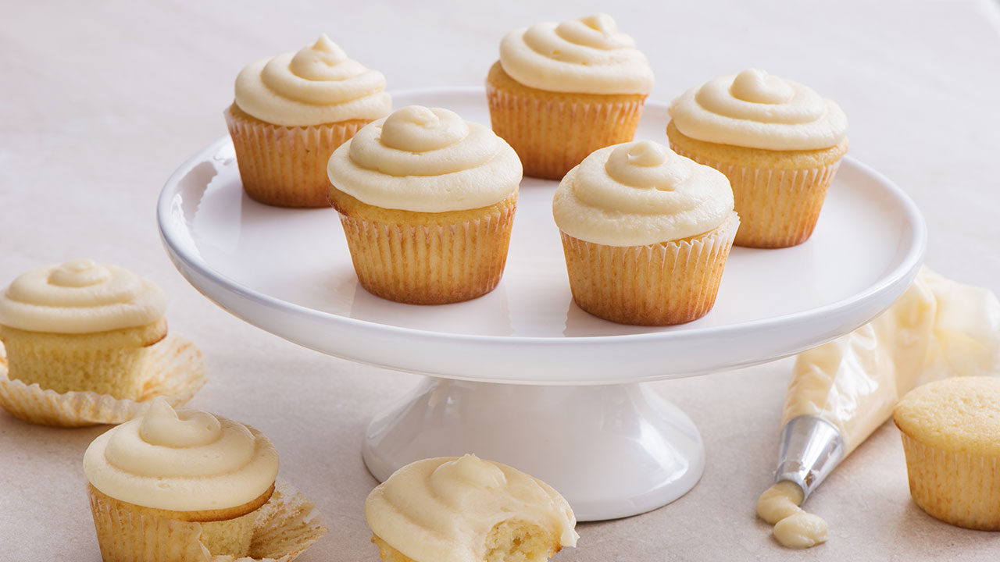

Home

Description
A sweet treat that is easy to bring to many occasions like birthdays or holiday gatherings
Ingredients
Cupcakes
- 1 1/2 cups all-purpose flour, sifted
- 1 1/2 tsp baking powder
- ½ tsp salt
- ½ cup unsalted butter, at room temperature
- 1 cup granulated sugar
- 2 eggs at room temperature
- ¾ cup milk
- 2 tsp vanilla extract
Frosting
- ½ cup ( 125 mL ) unsalted butter, at room temperature
- 4 cups ( 1 L ) icing sugar, sifted
- ¼ cup ( 60 mL ) 35% whipping cream (approx.)
- 2 tsp ( 10 mL ) vanilla extract
- Pinch salt
Steps
Cupcakes
- Preheat oven to 350°F (180°C). Line 12 muffin cups with paper liners. Whisk together flour, baking powder and salt; set aside. In separate bowl and using electric mixer, beat butter with sugar until light and fluffy. Beat in eggs, one at a time, incorporating each one fully before adding the next one; beat in vanilla.
- With mixer on low speed, add flour mixture in 3 parts alternately with milk in 2 parts, starting and ending with flour mixture, and scraping bowl as needed between additions.
- Spoon or scoop batter into prepared muffin cups, about two-thirds full. Bake for 18 to 20 minutes or until tester comes out clean when inserted into centre of cupcakes. Let cool completely on rack.
Frosting
- Beat butter until light and fluffy. With mixer on low speed, beat in icing sugar, cream, vanilla and salt until smooth, adding up to 2 tbsp (30 mL) more cream if needed. Increase speed to high; beat for 1 to 2 minutes or until frosting is light and fluffy.